Утренний отчёт · 18 октября
Всё, что сделано за 17.10, что ещё в работе, сколько стоит сервер и какие решения нужны от вас сегодня. Статусы: готово в работе мешает сборке ждёт вашего решения
1Что сделано за 17.10
Задачи R79–R118 из журнала выпуска (счёт «готово» в шапке — по последним 40 строкам журнала, R86–R125). Номер изменения (хеш) — по нему всё находится в коде.
9543b98c2 2d7da68ad98f738846 c92f7585d8b41a51b7 c9a5ca93deb0cf55d1 1c2823b957a40c6921fd15b3a00 ff4c18772 4d53d8c525e910033a31c52170233e89b88e3402bc5f0 fef378a6216566bd7d719e4c77137f546656cf8df70c3 8ab7d49e0834cced527d5db3c80a1c103a448ab7d49e0e3c6aaf04715073062 33cee28301b3e47a381бСделано за ночь
- Новый курс открыт целиком: все 441 занятие (было 205).
- Перенос занятий в приложение продолжался — итог к утру в разделе 3.
- Главная перерисовывается почти в 3 раза реже: со 122 до 44 перерисовок.
- «Сегодня»: награды больше не теряются — невыданные переносятся на завтра.
- Восстановление по коду: защита от подбора готова, ждёт итоговой проверки.
- Окна Моментов сверены: совпадает 2, отличий 24, переснять 4.
- Опросы 2.0 можно запустить частично без сборки (1 в день, 3 вопроса).
номера изменений
ee736a6bc c0363cc4d df39f5374 47250af15 b12b5b9a0 916ae8081 07818d3da eaab2f154 ca4b00413 cb4349b88- Новый курс: переписывание и перенос в приложение шли всю ночь — итог к утру 256 из 441 (уроки 1–4 целиком и урок 5, занятия 1–32), раздел 3.
- Восстановление по коду: код закрыт, ждёт финальной проверки Ревизора и абзаца политики.
- Опросы 2.0 переведены на все 9 языков — утром одно «да».
- Окно бонусов прошлой версии у людей не появляется; итог «0 монет» застрахован.
- Приложение стартует быстрее: озвучка грузится, только когда нужна.
- Праздники серии: свечение как в эталоне — ждёт пересъёмки.
- Эмулятор Сверки перезапущен (переполнялся из-за зависших снимков), снимки теперь безопасные — пересъёмка идёт.
номера изменений
dec0480de 141076412 1fa264c86 b9bcbcf2e f92bdcb90 b7ceb84fe 39f5d3c45- Звук нового курса без пустых записей: 68 «немых» клипов перезаписаны, сборка больше не берёт тишину. Проверка всего звука: 4695 файлов, тишина — 0 (R125). 466bcefd5 9b783c3f7 e6cbb6d7a
- «Все уроки» сделаны по эталону: чипы уровней A1–B2, «Классический курс» в том же ряду, строки уроков как в макете; метка «Текущий» переведена на турецкий и вьетнамский. f95474baf 2d2f308a4
- Сайт по-английски: Главная, «Скачать», Plus и Pro, вопросы, поддержка, подарок, тест уровня. Репетиция утренней выкладки прошла: политика на сайте совпадает с приложением построчно, битых ссылок 0. 758f69088 504f92938 95d433552
- Политика: срок хранения кодов восстановления больше не обещан — текст верен при любом состоянии автоудаления, сайт его не ждёт. 63cc84ceb
- Красные проверки: полный прогон идёт, итоговая цифра — после таблицы Дизайна. 3252fa4c4 7203c2268 98bfdd223 5f4f3b00c
- После смены языка Настройки открываются сверху, а Главная больше не уезжает вниз (было: Главная съезжала вниз, Настройки открывались с середины). 9568084d3 9f1bbfba9
- Крупный шрифт (1,3): на карте курса «Урок N», «Классический курс» и счётчик не обрезаются; плитка «Lecciones» на Главной не рвётся. Кадр «после» в светлой теме — у Сверки (R127). d4615d5b4 1f561bbb4
- Возврат на Главную кнопкой «назад» замерен 4 раза: 318–372 мс, самая тяжёлая часть экрана перерисовывается за 16 мс (незаметно глазу). Красный экран Главной от служебной проверки убран; служебные проверки не попадают в версию для магазина. 304e5170e 178b39b17 16a65de2d
- Хаб Диалогов: отступы карточек как в макете; «N/30» под энергией, при раскрытой категории — по центру; пока остаток ответов неизвестен — «—/30» и «Лимит — 30 ответов в месяц» вместо обещания «30/30». a7558c80b 2c0675a0f ce1222c47
С 20:00 17.10 — 121 изменение. Коротко по участкам; номера изменений спрятаны под «номера изменений».
- Переписано 256 из 441 (уроки 1–4 целиком и урок 5, занятия 1–32).
- Переписанные уроки переносятся в приложение: тексты, карточки, звук.
- Голоса совпадают с текстом: было 444 расхождения — стало 0; звук всех 441 занятий прошёл проверку.
- Новый курс — только для русского и украинского интерфейса, остальным — классический.
номера изменений
f5dd4f747 851b14a35 fd447f448 241d7b4e4 d5acec0a4 da9191fb8 05cf3a61b a151b0dec 89b824857- Английский интерфейс открыт; тексты вычитаны глазами носителя.
- Телефон на неизвестном языке стартует на английском.
- Опросы 2.0 — 36 вопросов на 9 языках.
- Бейдж места у Пика не обрезается на длинных языках.
номера изменений
67fc0e3ec 0c1d1b8c6 bd24810cb 6295aff78 a4679d16e fe6c96bd9 0cb2d532c c409ac0f8 31fa965f7 e380c2107- Восстановление по коду исправлено; проверка безопасности потребовала защиту от подбора кодов — в работе, выкладка утром после неё.
- Ошибки при входе и в друзьях больше не теряются молча — пишут причину.
- Заявка в друзья видна при следующем открытии.
номера изменений
40ad95e86 454976a16 d8604cb92 a25d669cb 37aef247d 834cced52- Пик — четвёртая плитка с местом в лиге.
- «Сегодня», кольца и награды отзываются сразу, без ожидания сервера.
- Починено «Поделиться» в недельном моменте.
- Главная перерисовывается реже — быстрее.
номера изменений
47876f843 f1b855998 75a5b74b1 47250af15 df39f5374- Кнопка «назад» — один значок во всех экранах.
- Контраст кнопок и плеера нового курса на светлых темах.
- Хаб Карточек: числа справа от иконки.
- Шторка голоса прокручивается на низких экранах.
номера изменений
37f546656 89a360603 8317a2ffc 3b742cb2d b57613ea1 5d2051c7e fa2faa583 0b974b1d9 53d0f8288 d117e0995- Все пары на одном экране; щедрее время на ступени.
- Ступени последнего часа недели досылаются к подсчёту.
- Меньше обращений к серверу.
номера изменений
8ab7d49e0 cf8df70c3 c0980560c aa245884a c85084e56 0d5cc54d2- План утренней выкладки 7 функций с порядком и проверкой после каждой.
- ИИ-диалоги: найдена поломка и в версии из стора; лечение готово.
- Пик W43 — ничего делать не нужно.
- Клиентские прогревы реже — дешевле.
номера изменений
c15e8bd32 2341dfb71 936750601 6e652645a ec28dd324 db44eece1- Админка без вкладок Джарвиса, «Стадия роста» считает сама.
- Выкладка сайта и политики подготовлена.
номера изменений
86aa201b6 e3c6aaf04 1b3e47a38- Иконки уроков и глав нового курса — в коде.
- Эталоны подогнаны под вечерний код (Главная, Карточки, шторка, «Сегодня»).
- Реестр сверки больше не теряет строки при пересборке.
- Сценарии проверки друзей для Сверки.
номера изменений
16566bd7d 4e71be616 1c9ccfdd6 d5a41525e 5f5c8fa9c2Анимированные окна
Проход Сверки по всем анимированным окнам: кадр, ✅ или 🔴 и что не так.

что отличается
- Огонь в тосте: в эталоне залитый светло-мятный с тёмной сердцевиной (заливка 3/10 мягким градиентом по всему силуэту), в приложении контур с заливкой только нижней четверти.
- Искра: в эталоне точка вылетает над огнём справа сверху; в приложении неподвижная точка на середине высоты между огнём и текстом.
- Плашка тоста: в эталоне светлее, серо-бирюзовое стекло; в приложении темнее и зеленее.


что отличается
- Искра: в приложении неподвижная точка на середине высоты между огнём и текстом; в эталоне в этом кадре искры нет (вылетает и гаснет над огнём).
- Плашка тоста: в приложении темнее и зеленее эталонной серо-бирюзовой.

что отличается
- Третье (внутреннее) кольцо: в эталоне жёлтое, в приложении серебристое.


что отличается
- Карточка: в приложении поля по бокам ~20 точек, в эталоне ~28 точек (карточка шире).


что отличается
- Фон: в эталоне тёмный градиент; в приложении плоский тёмно-серый, как будто слой тумана не ушёл.


что отличается
- Плашка окна: в эталоне светлее (серо-бирюзовый градиент), в приложении заметно темнее.

что отличается
- Облачко «Ещё раз?»: в приложении по бокам лишние серые фигуры («ушки»); в эталоне простое облачко с хвостиком вниз.
- Подпись: в эталоне «7 из 10. Остаёшься на 4 этаже, ступени не сгорают.»; в приложении «Остаёшься на 4 этаже. Новый набор из 10 заданий».

что отличается
- Башня: в эталоне крупный фрагмент (этажи 2–8, подписи этажей слева, горят окна 5-го); в приложении маленькая башня целиком со шпилем.
- Заголовок / подпись: в эталоне «5 этаж — Страж» / «На нём уже Ира и Олег.»; в приложении «Впереди Страж» / «5 этаж — смешанный набор, монеты ×2».

что отличается
- Имена в строках: в эталоне по центру строки, в приложении слева у монеты.
- Строка «Ты»: в эталоне отметка «↑ +1» перед числом; в приложении её нет (число 455 вместо 440 — счёт, не вёрстка).


что отличается
- Лишний крестик закрытия слева сверху — в эталоне его нет.
- Счётчики «верно / ошибок / точность»: в приложении цифры крупнее (~28 против 20) и с вертикальными разделителями; в эталоне без разделителей.
- Строка «Пройти урок»: в эталоне текст по центру между значком и «1/1»; в приложении слева.
- «Разобрать 3 ошибки»: в эталоне серая кнопка; в приложении текстовая ссылка.
- «Следующий урок»: в эталоне стрелка сразу за текстом; в приложении стрелка у правого края.

что отличается
- Заголовок / подпись: в эталоне «Эмма довольна» / «Закажи кофе · 3 цели из 3»; в приложении «Эмма: отлично!» / «Закажи кофе · 5 из 5».
- Список целей: в эталоне строки с разделителями, в приложении без разделителей.
- «+30 монет»: в эталоне серая плашка-строка с монетой; в приложении крупная надпись «+30» без плашки.
- Кнопки «Следующий сценарий» и «Разобрать 2 фразы» на кадре отсутствуют (каскад ещё идёт или их нет) — нужен кадр после ~4 с.


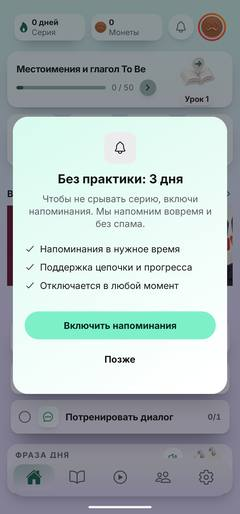
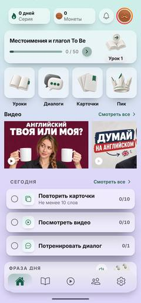
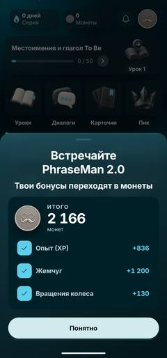
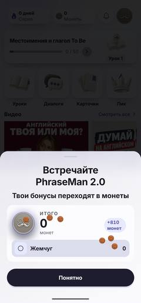
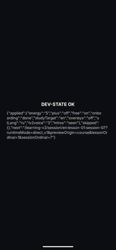
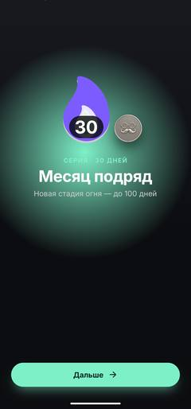
что отличается
- Календарь 30 дней не виден: по журналу [D30-CAL] у клеток style {width: "12.2%", aspectRatio: 1} → h=0 с первой раскладки (строка 347×235 выложена), вход ZoomIn кончается со scaleZero — в эталоне 5×7, 30 залито. Клетке нужна явная высота (ширина строки / 7) или aspectRatio на ширине в пикселях.
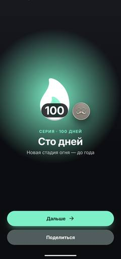
что отличается
- Ореол: цвет теперь зелёный, как в эталоне, но пятно меньше и намного ярче, с ярким центром; в эталоне — широкое мягкое тусклое свечение.
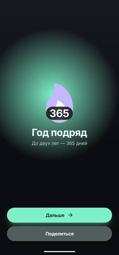
что отличается
- Ореол: в эталоне его нет (тёмный фон); в приложении яркое мятное пятно за огнём и заголовком.
- Искры вокруг огня (4–5 белых точек) в эталоне есть, в приложении нет.
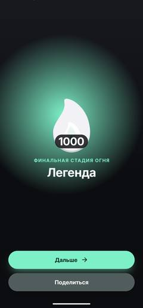
что отличается
- Огонь финальной стадии: в эталоне золотой, в приложении белый.
- Ореол: в эталоне его нет; в приложении яркое мятное пятно за огнём и заголовком.
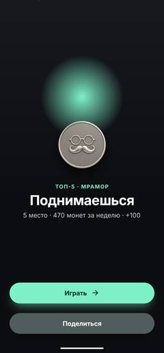
что отличается
- Ореол: цвет теперь зелёный, как в эталоне, но пятно меньше и намного ярче, с ярким центром; в эталоне — широкое мягкое тусклое свечение. Пятно стоит выше монеты.
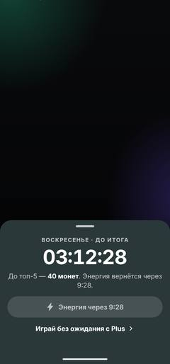
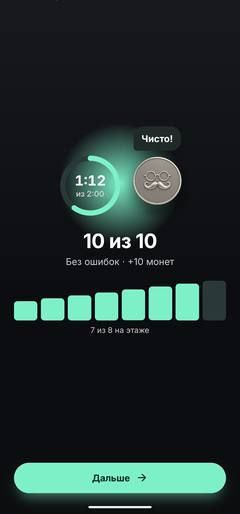
что отличается
- Ореол: цвет теперь зелёный, как в эталоне, но пятно меньше и намного ярче, с ярким центром; в эталоне — широкое мягкое тусклое свечение.
- Облачко «Чисто!»: в эталоне с хвостиком вниз к монете, в приложении без хвостика.
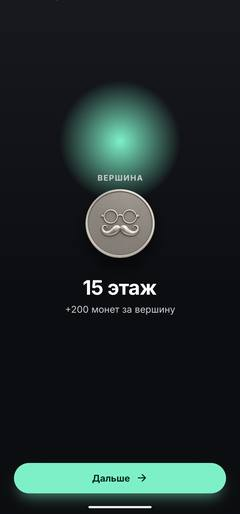
что отличается
- Ореол: цвет теперь зелёный, как в эталоне, но пятно меньше и намного ярче, с ярким центром; в эталоне — широкое мягкое тусклое свечение.
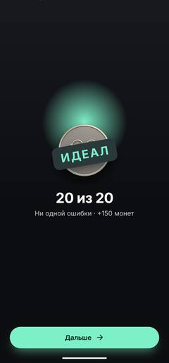
что отличается
- Ореол: цвет теперь зелёный, как в эталоне, но пятно меньше и намного ярче, с ярким центром; в эталоне — широкое мягкое тусклое свечение.
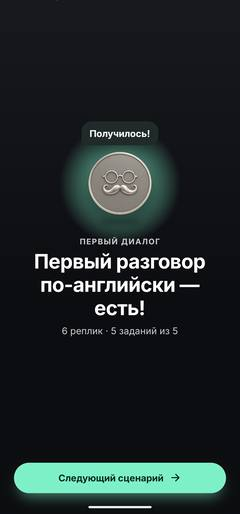
что отличается
- Ореол: цвет теперь зелёный, как в эталоне, но пятно меньше и намного ярче, с ярким центром; в эталоне — широкое мягкое тусклое свечение.
- Облачко «Получилось!»: в эталоне с хвостиком вниз к монете, в приложении без хвостика.
3Новый курс
Английский, 8 уроков по 56 занятий; тексты — на русском и украинском.
Было 15 занятий — днём подняли до 205, вечером до всех 441 по вашему слову 17.10. Звук есть у всех 441: проверка нашла 4 мелочи. 9543b98c2 · 648f2ec14
Переписано 256 из 441 (уроки 1–4 целиком и урок 5, занятия 1–32). В каждом: 4 новых слова с карточкой прямо перед заданием, три разных вступления, озвучка. 19c4ec903 · a1ab0dd90 · f7ba42125
- Урок 5 с 33-го занятия, затем уроки 6–8. У помощника Codex исчерпан лимит до 22.10 — темп ниже обычного.
- Заморозка текстов для сборки — 18.10 08:00: что не переписано к этому часу, уходит в версии до правки.
- Перевод нового курса на остальные 7 языков приложения — ваше решение (раздел 5).
4Расходы сервера
Цифры по реальному серверу за 7 суток, расчёт по публичным тарифам (±20 %).
| Статья | Было, $/мес | Стало после 17.10 | Цель после релиза |
|---|---|---|---|
| Время работы функций (процессор) | ≈ 35 | ≈ 24–26 | ≈ 3–5 |
| Чтения базы | ≈ 15 | ≈ 15 | ≈ 1–2 |
| Задачи по расписанию | 2,4 | 2,1 | ≈ 0,3 |
| Резервные копии (69 ГБ) | ≈ 2–3 | ≈ 2–3 | ≈ 0,3 |
| ИИ Джарвиса (не Firebase) | до 50 | 0 | 0 |
| Firebase итого | ≈ 55 $ (≈ 62 €) | ≈ 43–46 $ (≈ 48–52 €) | ≈ 5–8 $ (≈ 0,15–0,25 €/день) |
- Джарвис выключен, его задания на паузе.
- Удалены 82 функции без вызовов за неделю; у каждой — копия, вернуть можно одной командой.
- 22 фоновые функции получают часть мощности сервера; вход, старт, Пик и диалоги — полную (после замера скорости).
- Задачи по расписанию запускаются реже: раз в минуту → раз в 15 минут, раз в 5 → раз в 30, раз в 30 → раз в 2 часа.
- Проверка Сверки после урезания: Главная 0,87 с, вход ≈ 3,8 с, Пик 1,55 с. 501558120
- Самые частые функции — в Европу, рядом с базой: главный шаг.
- Меньше вызовов на каждом старте приложения; каталоги одним файлом.
- Резервные копии — раз в неделю, хранить 14 дней.
- Повторная выкладка всех функций — после выхода релиза, как вы решили вечером 17.10.
5Решения на утро
Сначала — восемь пунктов для сведения, уже решённых ночью. Дальше шестнадцать вопросов; почти по каждому есть рекомендация, она отмечена цветом.
а. Язык у тех, кто уже установил приложение (R119)
У старых установок язык не меняется сам. Узбекский, азербайджанский, армянский, грузинский, таджикский и туркменский телефоны получают русский; португальский (Португалия) — бразильский португальский.
б. Звук всех 441 занятий нового курса одобрен
Одобрил координатор по проверке Ревизора (звук прошёл полностью, расхождений с текстом нет).
в. Размер приложения
Цифры уточнились ночью — см. карточку 🔴 «Размер приложения» ниже.
г. Уроки нового курса — на «вы», остальное приложение — на «ты»
Так записано в правилах курса намеренно — это «голос учителя». Если хотите одно обращение везде, скажите — переделаем после выпуска (это переписка всех 441 занятий на нескольких языках).
д. Черновик Codex убран из рабочей папки
V2 убрала несохранённый черновик Codex от 16.10 (en/l08/s50) — он ломал проверку соответствия макетам; после этого проверка зелёная. Копия черновика сохранена, ничего не потеряно. подробнее
C:/Temp/claude/codex_drafts_backup/en_l08_s50_2026-10-16/ — final.ru.md и final.uk.md, совпадают с оригиналом.
е. Сайт: убраны обещания возврата денег
В условиях и политике гарантии возврата нет, а на сайте было «7 дней — вернём деньги без вопросов» — на страницах подарка, Plus, для России и в благодарности после оплаты. Все обещания сняты. Срок подарка теперь «365 дней» — точно как в приложении. Вместо «Самый популярный выбор» — «Выгоднее на 58 %», посчитано от цен. Если хотите дать гарантию возврата, сначала её нужно прописать в условиях, потом вернуть на сайт. 27b7ce239
ж. ИИ-диалог: ответ собеседника идёт ≈13 секунд
Почти всё это время уходит на работу сервера и нейросети, сама передача по сети — доли секунды. Первый запуск сервера после простоя добавил бы ещё 7–10 секунд, но его прячет «прогрев» в момент, когда человек открывает раздел.
В этом выпуске: пока ответ готовится, можно набирать следующую реплику, а у собеседника видна подпись «печатает…» или «отвечает дольше обычного».
После выпуска — ваше решение: (1) присылать ответ частями, чтобы реплика приходила раньше подсказок; (2) держать сервер всегда готовым — это постоянные расходы, сумму оценим.
з. Личные данные при смене аккаунта
Ночью нашли и чиним: когда на одном телефоне меняется аккаунт, личные данные одного человека не должны попадать к другому. Исправление идёт до сборки версии.
0. ИИ-диалоги сломаны — выложить первыми (R103-AI)
Сломано и в текущей версии 1.6.24 из стора — уже около 4 недель, и в 2.0. Сценарные диалоги и компаньон «Тео» (Plus) не отвечают, а квота при этом списывается и OpenAI оплачен. «Как сказать…» выдаёт ошибку. На испанском и немецком ИИ отвечает по-английски.
Лечение — три функции диалогов вместе. Чинит и версию в сторе, и 2.0; риск для старых версий низкий (проверка Моментов). 2341dfb71
Выкладка отрепетирована без записи — пробный прогон прошёл. Одна команда (3 функции):
bash scripts/deploy_from_clean_head.sh --only "functions:default:premiumDialogSend,functions:default:premiumDialogStream,functions:default:premiumDialogTranslate" --execute
Ожидаемо: три строки «Successful update operation», затем «✔ Deploy complete!» и код выхода 0. Откат — вернуть прежние версии функций одной командой; список версий у Сайта. 9793c0801 · §7.1
- Для сведения: после выкладки старые версии приложения получат бесплатно 30 ответов в месяц вместо 10 в день.
- Для сведения: пробный прогон делает служебную проверку прав сервера — повторяемую, функции и данные не меняются.
🔴 Размер приложения — со звуком 128 кбит/с не влезает в лимит Google Play
128 кбит/с — нынешнее качество звука; чем меньше число, тем легче файл и чуть хуже звук.
Со звуком 128 кбит/с, как сейчас, приложение ≈206 МБ — в лимит Google Play 200 МБ не проходит. Сжимать придётся — вопрос только насколько.
Оба варианта уже заготовлены ночью, пустых и тихих записей нет ни в одном:
- 64 кбит/с — загрузка из Google Play ≈134 МБ, запас до лимита ≈66 МБ;
- 96 кбит/с — загрузка ≈173 МБ, запас ≈27 МБ.
96 кбит/с годится, только если до релиза не добавятся новые уроки; если поедут уроки 6–8 — остаётся только 64. Запаса на будущие уроки у 64 кбит/с в два с лишним раза больше. R124 · 73176fa54 · цифры Ядра 18.10 03:58
Решаете на слух вы — 20 фраз курса ниже, в каждой три варианта. Слушать первыми: 3 «asleep», 10 «steady», 15 «sturdy», 20 «icy» — на коротких словах 64 кбит/с отличается сильнее всего.
Выберите до 06:45 — тогда звук успеет к заморозке версии в 08:00. После выбора — проверка и сохранение, ≈40–55 минут, максимум около часа — даже так звук успевает к 08:00; в это время остальные команды звук курса не трогают. Если выбрать позже, звук доедет примерно через час после выбора.
Догрузки звука по сети в приложении нет (убрана в сентябре) — это новая разработка после релиза: отдельный пакет звука в Google Play (догрузка после установки) или догрузка по сети.
iOS: жёсткого лимита нет, но больше 200 МБ — телефон спросит подтверждение загрузки по мобильной сети.
onyx, coral, nova, ash — имена голосов.
- 1. envelopeonyx
- 2. That is a recycling bin.coral
- 3. asleeponyx
- 4. There is some soup.onyx
- 5. Where are my headphones?onyx
- 6. Where do you park?onyx
- 7. This is a fountain.nova
- 8. This is not a magnet.nova
- 9. She's ill.coral
- 10. steadyash
- 11. The chairs are under the awning.coral
- 12. inactiveash
- 13. We're late.onyx
- 14. It is impossible.coral
- 15. sturdynova
- 16. stadiumonyx
- 17. The locker is mine.onyx
- 18. playgroundonyx
- 19. The berry is red.nova
- 20. icyash
Заметных потерь нет; сильнее всего 64 кбит/с отличается на коротких словах (фразы 3, 10, 15, 20).
Подробные замеры Ядра, дБ: 128 → 96 → 64
| № | Громкость | Выше 8 кГц | Выше 11 кГц | Флаг |
|---|---|---|---|---|
| 1 | −24,5 → −24,9 → −25,0 | −61,4 → −61,8 → −61,5 | −76,8 → −76,9 → −76,7 | — |
| 2 | −33,7 → −34,2 → −34,1 | −45,0 → −45,4 → −45,4 | −60,8 → −61,3 → −60,9 | — |
| 3 | −27,7 → −28,2 → −28,0 | −37,8 → −38,2 → −37,9 | −60,1 → −60,7 → −60,4 | — |
| 4 | −26,2 → −26,7 → −26,7 | −41,7 → −42,1 → −42,0 | −65,9 → −66,2 → −66,1 | — |
| 5 | −25,1 → −25,6 → −25,6 | −56,4 → −56,9 → −56,8 | −72,1 → −72,6 → −72,4 | — |
| 6 | −24,5 → −25,0 → −25,0 | −66,3 → −66,7 → −66,5 | −85,3 → −85,6 → −86,1 | — |
| 7 | −22,1 → −22,5 → −22,5 | −32,5 → −33,0 → −33,0 | −51,5 → −52,1 → −52,3 | — |
| 8 | −19,8 → −20,3 → −20,3 | −32,1 → −32,5 → −32,4 | −50,8 → −51,3 → −51,3 | — |
| 9 | −26,4 → −26,9 → −26,9 | −46,2 → −46,6 → −46,5 | −61,8 → −62,5 → −62,0 | — |
| 10 | −27,4 → −27,9 → −27,8 | −38,0 → −38,4 → −38,2 | −57,3 → −57,7 → −58,2 | — |
| 11 | −30,8 → −31,3 → −31,3 | −47,8 → −48,2 → −48,0 | −65,1 → −65,8 → −65,3 | — |
| 12 | −31,4 → −31,8 → −31,8 | −55,0 → −55,4 → −55,1 | −67,6 → −68,1 → −67,9 | — |
| 13 | −27,4 → −27,8 → −27,8 | −64,7 → −65,2 → −65,2 | −83,1 → −83,5 → −83,5 | — |
| 14 | −31,7 → −32,2 → −32,1 | −45,4 → −45,9 → −45,7 | −62,6 → −63,3 → −63,1 | — |
| 15 | −21,3 → −21,8 → −21,7 | −30,8 → −31,3 → −31,2 | −51,4 → −52,0 → −51,6 | — |
| 16 | −26,2 → −26,6 → −26,6 | −44,8 → −45,3 → −45,0 | −66,0 → −66,4 → −66,3 | — |
| 17 | −24,7 → −25,1 → −25,1 | −59,0 → −59,5 → −59,4 | −75,5 → −76,0 → −75,8 | — |
| 18 | −27,7 → −28,1 → −28,1 | −69,6 → −70,0 → −69,5 | −84,8 → −84,9 → −85,3 | — |
| 19 | −21,3 → −21,7 → −21,7 | −40,0 → −40,4 → −40,0 | −59,3 → −59,7 → −58,5 | — |
| 20 | −27,3 → −27,7 → −27,7 | −38,8 → −39,2 → −39,1 | −59,6 → −60,1 → −59,3 | — |
Отмеченных пар нет. Громкость 96k и 64k на 0,4–0,5 дБ ниже 128k одинаково: кодер добавляет ~0,05 с тишины в начале, средний уровень по клипу снижается; пики и спектр совпадают. По форме волны 96k ближе к 128k (21,6–26,0 дБ), чем 64k (13,8–25,2 дБ). Сильнее всего 64k расходится на коротких одиночных словах голосов ash и nova (03 asleep, 10 steady, 15 sturdy, 20 icy) — их и слушать первыми.
1. Семь функций на сервер (R103) — по порядку
Новая версия приложения зовёт функции, которых на сервере нет или которые там старее. Выкладываются по одной, в этом порядке, с проверкой журнала после каждой; остальное не трогается. Ниже — что сломано у людей без каждой.
submitLearningV2CourseSessionCompletedV1levelSpinStarGrantsubmitFeedbackEntryreEngagePushCronlegacyBonusConvertMineonboardingLevelRecordcommunityAuthorRemoveCard1а. Восстановление аккаунта по коду (R111)
Не работает ни на сервере, ни в новой версии: сервер требует проверку подлинности приложения, которой у приложения нет с 01.10. Код исправлен и закрыт: защита от подбора кодов, чужое восстановление нельзя заблокировать. Политика в сборке и на сайте — с фразой без срока хранения, она верна при любом состоянии автоудаления; сайт этого больше не ждёт. Срок «в течение двух дней» вернём после релиза, когда автоудаление заработает.
- Firebase Console → Firestore → Time-to-live: включить две политики по полю
expireAt— дляauth_recovery_rate_limitsиauth_recovery_clean_rate_limits. Только в консоли, не командой: команда может предложить удалить другие индексы. - «Да» на выкладку функций восстановления (R111).
Выкладка — после сайта, отрепетирована без записи, пробный прогон прошёл. Одна команда (6 функций):
Список функций сверяется Ревизором — до его ✅ не выкладывать.
bash scripts/deploy_from_clean_head.sh --only "functions:default:authRequestRecoveryCode,functions:default:authConfirmRecoveryCode,functions:default:authRequestCleanInstallRecoveryCode,functions:default:authConfirmCleanInstallRecoveryCode,functions:default:authIssueRecoveryHandoffToken,functions:default:authCompleteRecoveryHandoff" --execute
Ожидаемо: шесть строк «Successful update operation», затем «✔ Deploy complete!» и код выхода 0. Откат — вернуть прежние версии функций одной командой; список версий у Сайта. 9793c0801 · §7.2
2. Выкладка сайта и политики (R105)
Собрано из чистой копии. Репетиция прошла: тексты политики на сайте совпадают с приложением построчно, битых ссылок 0, на телефоне нет горизонтальной прокрутки. Автоудаления (R111) сайт не ждёт. 95d433552
bash scripts/deploy_from_clean_head.sh --only "hosting:knowlywww" --execute
Ожидаемо: «✔ Deploy complete!», код выхода 0. Откат — Firebase Console → Hosting → Release history → Rollback.
2а. Админка без Джарвиса
Вкладки Джарвиса из админки удалены (сам он выключен 17.10), «Стадия роста» теперь считает сама. Выкладывается одной командой отдельно от приложения. 86aa201b6
bash scripts/deploy_from_clean_head.sh --only "hosting:admin" --execute
2б. Окно напоминаний — утвердить эталон
У подсказки «Без практики: 3 дня» эталона не было, а старый эталон запроса «Включить напоминания?» был в прежнем виде. Оба нарисованы по нынешнему коду окна — в виде 2.0, в «Сумерках» и «Океане». Код не меняется. c53d9081a
2в. Заголовок окна «Встречайте PhraseMan 2.0»
В макете, который вы одобряли, заголовок на экране был мельче и в одну строку — из-за общего правила страницы. Задумано и сделано в приложении крупнее, в две строки. Всё остальное в окне совпадает. Правка в любую сторону — 5 минут.

2г. Итог недели Пика — ступени (как сейчас) или монеты недели (как в эталоне)?
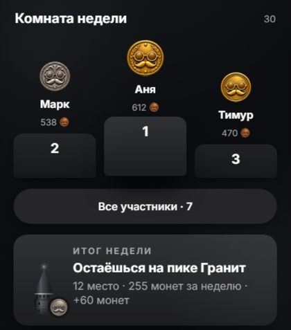
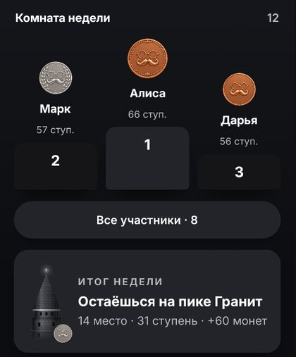
2д. Лента видео на Главной для интерфейсов не на русском
Сейчас ученик с испанским (и любым другим не русским) интерфейсом видит на Главной русские ролики — их делали для русскоязычных. Роликов на других языках пока нет.
Разбор Дизайна: ленту выбирает язык, который человек ИЗУЧАЕТ, — при английском показывается русскоязычный канал Professor Lingman при любом интерфейсе. Выключатель готов и выключен: если его включить, лента прячется у интерфейсов не на русском и не на украинском, когда ролики на кириллице. Украинский интерфейс не прячем. 8378c4e0a
2е. Серия правильных ответов в уроке: кольцо с числом или нагревающаяся полоса, как в эталоне
В эталоне серия видна полосой прогресса, которая «нагревается» с каждым правильным ответом. В приложении — прежнее кольцо с числом и подпись «N подряд» под ним. Кольцо уже работает и проверено в настоящем уроке; оно «нагревается»: на 3 подряд заливается цветом темы, на 5 — янтарным, рядом выглядывает монета.
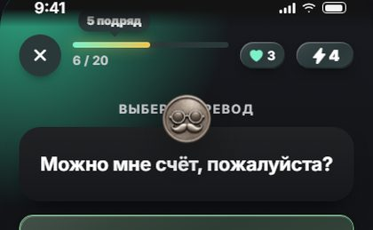
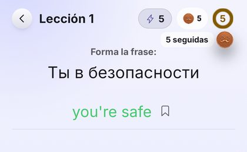
2ж. Согласие на анонимную статистику, когда на одном телефоне сменился человек
Если один человек вышел из аккаунта, а другой вошёл на том же телефоне, согласие на сбор анонимной статистики сейчас переходит от прежнего. Если выберете «спрашивать заново», перед выпуском этого изменения сверим текст политики конфиденциальности.
3. Главная: какой ряд из 4 плиток (R108)
Пока вы не выбрали, в коде делается (в). 4 плитки видны только там, где доступны все четыре раздела; иначе остаётся 3.


4. Опросы (R107) — 4 вопроса
Тексты готовы на всех 9 языках. Утром нужно одно ваше «да» — запускаем новые опросы и выключаем старые. Можно запустить частично без новой сборки: 1 опрос в день, 3 вопроса — нынешнее приложение это уже поддерживает. Полный вариант — со сборкой. 1) Утвердить набор из 36 вопросов (вычеркнуть или добавить). 2) Награда за опрос: энергия +1, монеты или без награды. 3) Сколько опросов в день — предложено 3. 4) Старые опросы выключить целиком в день выхода новых (ответы остаются в админке).
5. «Почему так» в Диалогах
«Объяснить» в уроках и ошибках убрано. В Диалогах осталась похожая кнопка «Почему так» — это отдельная функция, её не трогали без вас.
6. Перевод нового курса на 7 языков
Тексты нового курса сейчас только на русском и украинском. Для остальных 7 языков приложения (английский, испанский, португальский, вьетнамский, индонезийский, турецкий, польский) курс показывать нельзя, пока нет перевода (R92).
6Что осталось и риски
- Возможная утечка памяти (R129) — через ~30 мин после запуска приложение занимает 2,95 ГБ, из них ~1 ГБ «родной» памяти. Замер по экранам: обычные переходы между вкладками добавляют ~13 МБ за круг и не отдают их (+53 МБ за 20 переключений); переход на Главную по служебной ссылке — +100…126 МБ. Что делаем: журнал звуковых плееров (создан / освобождён) у Ядра, затем правка; до правки в релиз не считаем закрытым. f90dce799 · mem_screens_README.md
- «Сегодня» (R117) — прогресс задания дня мог теряться (выплата награды и новое событие шли наперегонки). Исправлено вечером.
- «Встречайте PhraseMan 2.0» — «Итого 0 монет»: поставлена страховка — итог больше не остаётся нулём. Ревизор проверил: у людей это окно для прошлой версии сейчас не появляется, только в служебном просмотре.
- Восстановление по коду (R111) — код исправлен и закрыт: дневной предел неверных кодов на аккаунт и на того, кто вводит, подсчёт без сбоев, защита от блокировки чужого восстановления, шифрование данных о попытках. Политика — без срока хранения, сайт не ждёт. Утром: автоудаление в консоли и ваше «да» на выкладку (раздел 5, 1а).
- Восстановление по коду (R111) — не работает у людей до выкладки; код готов, выкладка утром после вашего «да».
- Красные проверки кода (R115) — полный прогон идёт.
- Размытый текст во вступлении занятия (R91) — журналы стоят, причина ищется.
- Кнопка «назад» (R94) — код готов, ждёт проверки на всех экранах.
- Друзья (R100) — починка есть, ждёт прогона.
- Новый курс: к заморозке 08:00 переписано 256 из 441 (уроки 1–4 целиком и урок 5, занятия 1–32) — остальные уходят в прежнем виде.
- Без R103 монеты за репорты и «Дневной путь» не зачисляются, итоги длинных занятий и отзывы нового курса не уходят.
- Кадры Сверки по R80, R89, R94, R100, R102, R104 ещё не сняты — без них «готово» только по коду.
- Расходы: главная экономия (функции в Европу) возможна только после выхода версии.
Исправления отчёта
- Ночные цифры готовности «23–27 из 40» были неточными: правило, по которому они считались, не воспроизводится. С 00:35 — строго по журналу выпуска (R86–R125).
- 22 → 19: строки с ⏳ после ✅ (R109, R121, R123) не считаются готовыми. Готово — 19 из 40, ещё 6 частично.
Собрано сессией «Макеты» 17.10 вечером по журналу выпуска (docs/work/tasks/release-ledger-2026-10-15.md), плану расходов (firebase-cost-cut-2026-10-17.md) и ходу курса. Раздел 2 — из таблицы Сверки.